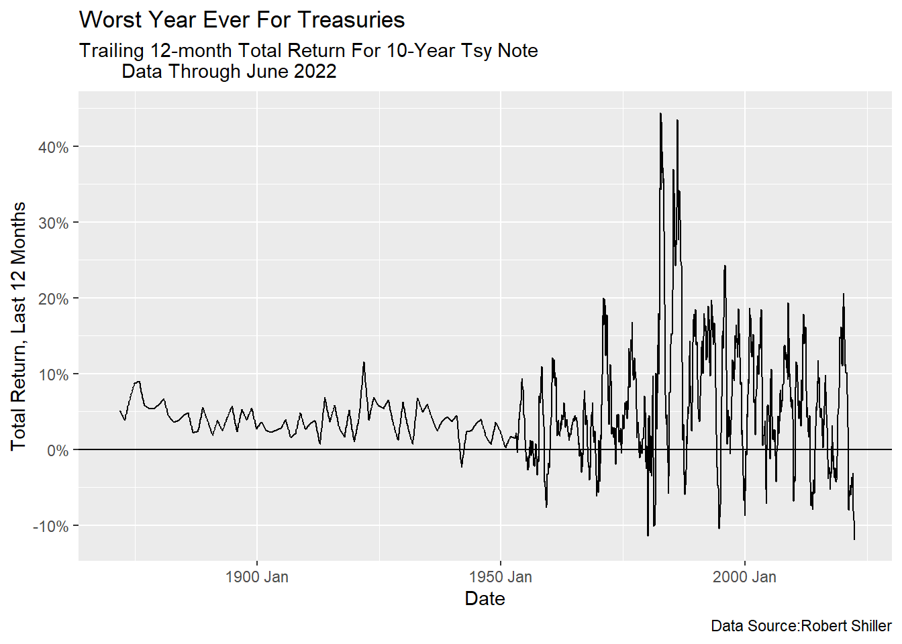
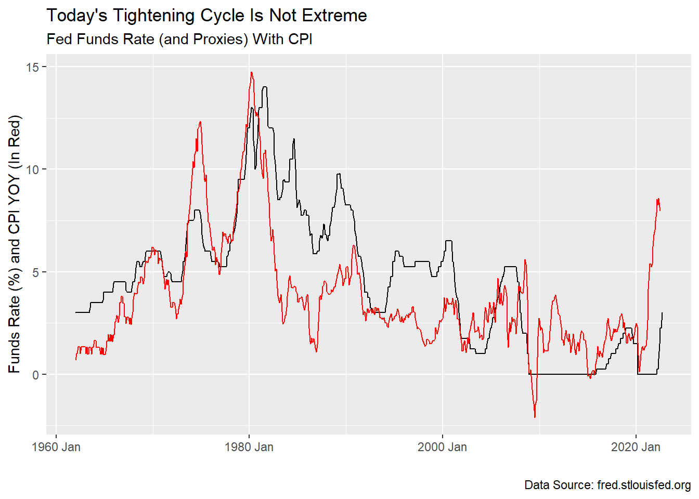
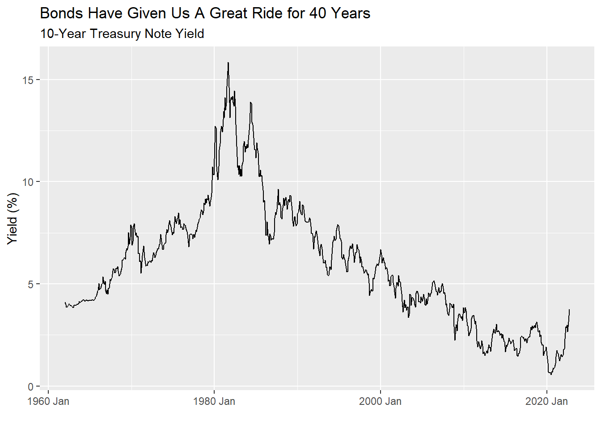
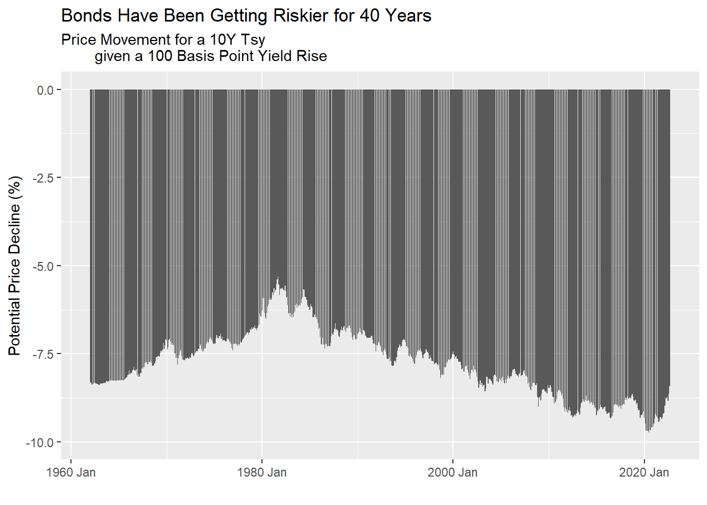

Part One
Part One: More Than Meets The Eye
Worst. Year. Ever.
As many pundits have pointed out, this is the worst year for U.S. bonds in…forever. The chart below only includes returns through June so you can knock another two percentage points in price off your net worth statement.

What was the Fed Thinking? (rhetorical question)
I am following this with interest since an ugly bond sell-off in 1987 was a “sliding door” moment where my career as a money manager could have ended right at the start. As it happened, I got through it in good shape and was given more responsibility as a result. As bad as it was, today is certainly much worse, though an important reason is not obvious.
What is obvious is the Fed is behind the curve. It was obvious to many even when the Fed was calling inflation “transient.” Tight labor markets, not the supply chain, were telling us that. Now they have been playing catch up with a dramatic pace of rate rises. The pace is quick, but the magnitude is not large by historical standards, not yet, anyway.

Below, we see the Yield back-up in the 10-Year Treasury is certainly among the nastiest, though not what the quants would call a “3-sigma” event, yet. Those of you following markets have heard plenty of explanations for this, all good ones, but wait, there’s more!

Bond’s Can’t Help But Be Terrible
One thing I found helpful early in my career was knowing bond math well, or better, at least, than the stock jockeys on the desk. If it wasn’t buried in the rubble of the World Trade Center, I’d show you my copy of Marcia Stigum’s 1979 book, “The Money Market.” Like the HP-12C calculator, it’s a classic and equally unapproachable. If there is anything more boring than the subtleties of day count conventions in security pricing, I haven’t found it yet. More interesting are the nuances of “duration” and “convexity.” This is what concerns us today.
Apologies if you know all this, but bear with me and permit some simplification. We’re not on a trading desk (Ahh, good times. Sigh). Duration is a measure typically quoted in years. It is the weighted average time to receipt of a bond’s cash flows, both coupon and principal. The flows are weighted by the “time value of money.” It simply means a dollar today is worth more than a dollar tomorrow. How much more depends on the interest rate or yield of the bond. In a world of higher yields two things happen. The bond coupons are larger as a fraction of the final principal payment and the more we value the closer-in-time cash flows. So, when yields are high, the weighted time to get our money back is shorter and the duration is shorter. Right now, the duration of the 10-year maturity T-Note is about 8.6 years. Now consider the case of a zero-coupon bond. The ONLY cash flow is at maturity. Then the yield doesn’t matter. The duration equals the maturity.
We quote duration in years but the number is shorthand for what we really care about. It tells us approximately how much the price of a bond will change given move in yields. Today’s 10-Year will fall in price by roughly 8.6% if it’s yield rises from 3.26% to 4.26% (Get out your HP-12C if you want to know the exact answer). Therein lies an important reason why today’s bond sell off is so brutal. Go back to that bond bear market in 1987. The Fed hiked rates more and bond yields rose almost as much as they have this time, yet the bond price declines were milder because the duration of the market was much shorter for each maturity. The duration of each maturity of the Treasury market has been rising for 40 years while interest rates have been coming down. The market has gotten riskier just due to the math of lower rates. Trough to peak, the 30-year Treasury has extended from 7 to 25 years in duration! Yikes! I don’t watch much CNBC but I don’t think duration is a big topic. Neither Greg Ip or Jason Zweig at the Wall Street Journal seem have talked about it, either. Duration deserves more attention.

There is a silver lining and it’s called convexity. We know that as yields go up, duration goes down, so the worse the market gets, for each subsequent basis point1 yield move the smaller the price changes are. Likewise, in bull markets for bonds, price gains accelerate. This is called “positive convexity.”
The bottom line is this: It is true that shorter maturity bonds are less volatile than longer maturity bonds but today’s bonds aren’t your father’s bonds. Today’s bonds have way more price risk, whatever you think about the Fed’s actions.
As an aside, one reason government-backed mortgage bonds from GNMA deserve a yield premium is they have “negative convexity.” Can you figure out why? Answer in my next note.
More importantly, we’ll answer a more interesting question: “How do I make money now?”
Footnotes
One basis point equals 1/100th of a percentage point.↩︎